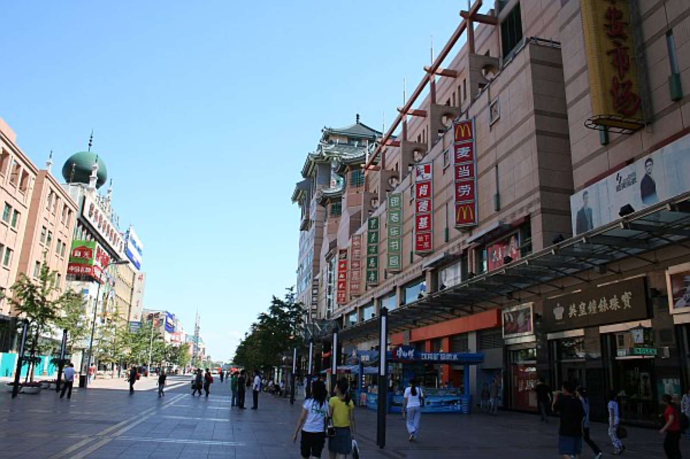

01
08:00–09:00
아침 식사와 짐 정리
식사
여권, 충전기와 소지품을 확인합니다.

선월드에서 11:15 출발 목표. 15:35 서우두 출발.
여권, 충전기와 소지품을 확인합니다.
숙소에서 가까운 한 곳만 들르고 이동이 길어지면 생략합니다.
선월드 호텔 왕푸징에서 짐을 찾고 차량 호출 또는 공항철도 경로를 확인합니다.
12:35는 공항 도착 목표입니다. 택시 정체나 공항철도 환승에 따라 출발을 앞당기세요.
아시아나 안내 기준 서우두공항 T2입니다. 전자항공권에 표시된 실제 터미널을 다시 확인하세요.
18:35 인천 도착 예정입니다. 두 시각은 각 공항 현지 시각입니다.
07:00–22:00 · 베이징 현지 시각. 점선은 예시 시간이며 항공편·투어 예약에 맞춰 조정합니다. 빈칸은 일정 여유입니다.